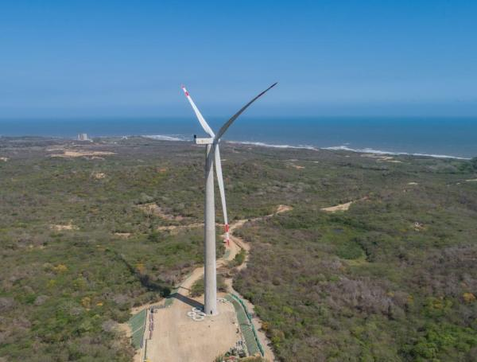
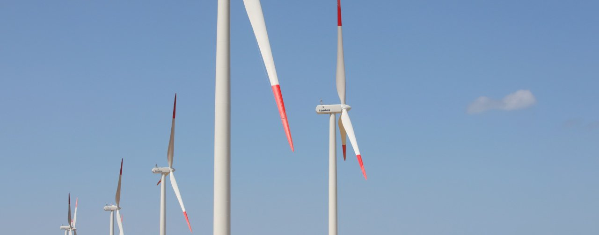

Colombia saltó del 2 % al 13 % en capacidad para generar energía solar y eólica

Colombia cerró el 2025 con 2.685 megavatios de energía renovable no convencional (solar, eólica y biomasa), que representan el 13 por ciento de la capacidad instalada total del sistema eléctrico nacional.
Este resultado se da principalmente gracias a una inversión acumulada de 2.900 millones de dólares —en su mayoría de origen privado— que generó más de 27.000 empleos directos durante la fase de construcción de los proyectos.
El 71 por ciento (653 megavatios) de los 925 megavatios que entraron en operación durante 2025 proviene de nuevas empresas inversionistas en el sector de energía en Colombia.
Entre estas empresas están
- Atlas Renewable Energy (Estados Unidos)
- Ecoener (España)
- Patria Investments / Patria Infrastructure Fund V (Brasil)
- China Three Gorges (China)
Estas cifras dan un balance positivo con respecto a la implementación de energias limpias en este país, y muestran un posible crecimiento en su aplicacion a futuro. Para ver la noticia completa sigue el enlace a continuación:
Artículo completo
MinEnergía da luz verde para integrar energía eólica costa fuera y energías limpias a la matriz eléctrica nacional

Con enfoque administrado y visión de largo plazo, el Ministerio de Minas y Energía expidió la Resolución 40337 de 2025 que da inicio a la primera ronda de adjudicación del mecanismo de mercado para eólica marina a largo plazo.
El Ministerio de Minas y Energía expidió la Resolución 40337 de 2025, un hito normativo que da inicio a la primera ronda de adjudicación del mecanismo de mercado para proyectos de generación de energía a partir de energías limpias. Esta ronda, que operará bajo un esquema de pago por diferencias (PpD) y con enfoque administrado, está diseñada para impulsar tecnologías estratégicas que fortalezcan la resiliencia y sostenibilidad del Sistema Interconectado Nacional.
“Esta primera ronda es mucho más que una convocatoria: es una apuesta estratégica por el futuro energético del país. Apostamos por tecnologías que eleven la confiabilidad, de cero emisiones y reactiven la economía con nuevos encadenamientos productivos”, afirmó el ministro de Minas y Energía, Edwin Palma Egea.
Puedes ver el artículo completo con el enlace a continuación
Artículo completo